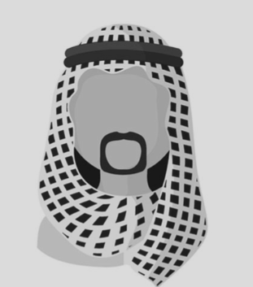

القضايا المدنية
مطالبات وتعويضات ومسؤولية مدنية وصياغة مذكرات مبنية على وقائع موثقة وأسانيد دقيقة.
اقرأ المزيدنخبة من المحامين المتخصصين يمثلون الأفراد والشركات والمستثمرين بمنهجية واضحة وسرية تامة.
تأسس مكتب إسناد القانونية عام 2004 برؤية واضحة: خدمة قانونية راقية تجمع بين العمق المعرفي والحس الاستراتيجي. واليوم يضم المكتب نخبة من المحامين المتخصصين الذين يمثلون الأفراد والشركات والمستثمرين في أعقد القضايا وأكثرها حساسية في المملكة العربية السعودية والمنطقة.
اقرأ المزيدمطالبات وتعويضات ومسؤولية مدنية وصياغة مذكرات مبنية على وقائع موثقة وأسانيد دقيقة.
اقرأ المزيدتمثيل في التحكيم التجاري، إعداد المذكرات، إدارة الأدلة، وتسويات النزاعات المعقدة.
اقرأ المزيدتأسيس ومواءمة الكيانات، اتفاقيات الشركاء، اللوائح، وتخطيط هيكل قانوني قابل للنمو.
اقرأ المزيدسنة خبرة
أن نكون المرجع القانوني الموثوق في حماية المصالح وإدارة النزاعات، بحلول قانونية دقيقة تعكس أعلى معايير النزاهة والاحتراف والسرية. ونسعى أن يخرج كل عميل من استشارته وهو يفهم موقفه القانوني وخياراته ومخاطره بوضوح.
انطلاق الممارسة القانونية بتركيز على التقاضي التجاري والمدني.
إطلاق فريق متخصص في التأسيس، الحوكمة، وصياغة العقود.
توسيع نطاق التمثيل في التحكيم، التنفيذ، والمطالبات عالية القيمة.
تطوير خدمات الاستثمار والامتثال والملكية الفكرية للشركات الناشئة.
تحسين تجربة العملاء عبر متابعة ملفات آمنة ومؤشرات أداء واضحة.
نؤمن أن أفضل النتائج لا تأتي من النص القانوني وحده، بل من فهم الأطراف وقراءة التوقيت ووضع استراتيجية واضحة قبل أول خطوة إجرائية.
سنة خبرة
«التزامنا الأول هو حماية مصلحة العميل بوضوح كامل، وقرار قانوني مبني على دليل، لا على انطباع.»— عبدالعزيز الراشد، الشريك المدير


جلسة سرية نسمع فيها قصتك ونفهم هدفك القانوني.
ما ستحصل عليه: فهماً واضحاً لموقفك القانوني، وأسئلة محددة تُبنى عليها الخطوات التالية.
ندرس الأدلة والمستندات ونحدد نقاط قوتك.
ما ستحصل عليه: قراءة منظمة للمستندات تكشف الثغرات والأدلة الداعمة قبل أي إجراء.
نرسم لك خطة تراعي النظام والتكلفة والتوقيت.
ما ستحصل عليه: خيارات واضحة توضّح المسارات الممكنة ومخاطر كل منها لتقرر عن بيّنة.
نفاوض ونترافع ونصيغ المذكرات بإتقان أمام الجهات المختصة.
ما ستحصل عليه: إجراءات منظمة ومتابعة للمواعيد والجهات المختصة نيابةً عنك.
نغلق الملف بأفضل نتيجة ممكنة بإذن الله.
ما ستحصل عليه: ملخصاً بما تحقق، وتوصيات بالخطوات اللاحقة إن لزم.
أرسل لنا ملخص قضيتك، ونوجّهك إلى المحامي الأنسب لها خلال 30 دقيقة بإذن الله.
احجز استشارتك الآناتصل بنا الآنواتساب الآنابحث في خدماتنا ومقالاتنا القانونية